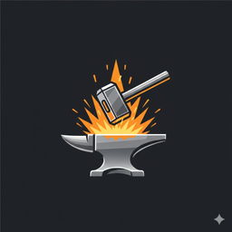

🔨 Icon & Favicon Update
✅ COMPLETE
🎨 Source Image
Forge Terminal - Anvil & Hammer (1024x1024)
🌐 Web Favicons
<link rel="icon" href="/favicon.ico" />
<link rel="icon" sizes="192x192" href="/favicon-192.png" />
<link rel="apple-touch-icon" href="/favicon-192.png" />
🪟 Windows Desktop Icon

256×256 (Embedded in .exe)
- Icon embedded in executable
- Desktop shortcut uses .exe icon
- Windows resource files generated
✅ Changes Applied
- Generated transparent favicon (32×32)
- Generated web icons (192×192, 512×512)
- Created Windows .ico files
- Embedded icon in .exe via .syso
- Updated index.html with favicon links
- Desktop shortcut auto-uses .exe icon
📊 Build Process Flow
Source PNG
1024×1024
→
Sharp Resize
Multiple sizes
→
to-ico
Convert to .ico
→
go-winres
Embed in .exe
🔧 Files Created/Modified
Frontend:
frontend/public/favicon.ico (4.06 KB)
frontend/public/favicon.png (1.04 KB)
frontend/public/favicon-192.png (18.50 KB)
frontend/public/favicon-512.png (88.48 KB)
frontend/index.html (modified)
Windows:
internal/platform/windows-icon.png (28.79 KB)
internal/platform/windows-icon.ico (256.06 KB)
cmd/forge/rsrc_windows_386.syso (257.99 KB)
cmd/forge/rsrc_windows_amd64.syso (257.99 KB)
Scripts:
scripts/generate-icons.js
scripts/convert-to-ico.js
scripts/verify-icons.js
🚀 Next Steps
# Test the new icon
.\forge-test-icon.exe
# Build production executable
go build -o forge.exe ./cmd/forge
# The desktop shortcut will automatically use the embedded icon
# No additional configuration needed!